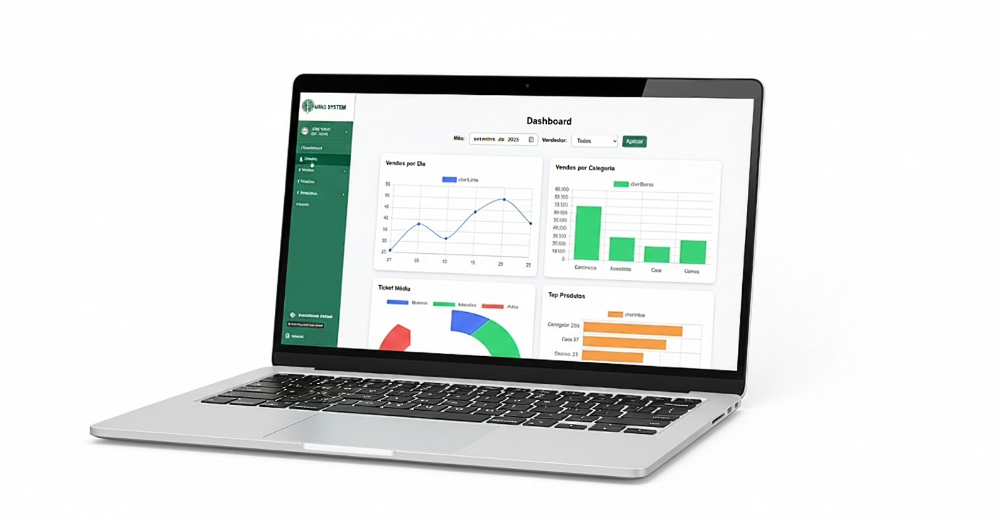

Gestão de Vendas e Clientes na Palma da Mão.
A ferramenta foi desenvolvida com o intuito de oferecer funcionalidades rápidas, práticas e intuitivas, aprimorando o desempenho dos seus vendedores e a qualidade do atendimento.
Descubra Como
Simplificamos o Que Era Complexo
Nossa proposta central é resolver os desafios da gestão de dados e processos que consomem seu tempo e limitam o crescimento.
Excesso de Informação Desorganizada
Diante da necessidade de organizar e armazenar um grande volume de dados de clientes e vendas, o MIND SYSTEM transforma tudo em informações sistematizadas em planilhas e gráficos para melhor administração.
Processos Lentos e Manuais
A proposta central é a automatização de processos e a melhoria da qualidade do atendimento ao cliente. Deixe o trabalho repetitivo para o sistema e foque no relacionamento e nas vendas.
RECURSOS EXCLUSIVOS
Conheça as Funcionalidades do MIND SYSTEM
Área de Relatórios Gerais
Disponibiliza relatórios visuais e detalhados sobre o desempenho das vendas, bem como as interações dos clientes com a empresa afiliada, permitindo decisões estratégicas em tempo real.
Ver Detalhes →2.1 Tela de Pedidos
Permite a visualização e organização dos pedidos de um cliente específico, bem como a consulta rápida de todos os pedidos realizados com facilidade.
2.2 Tela de Clientes
Acompanhe a situação de cada cliente, classificando-os de forma clara como ativos, em análise, com pagamento pendente, garantindo um controle total da sua carteira.
2.3 Tela de Vendas e Produtos com AR
Catálogo completo de itens e serviços. Inclui recursos de **Realidade Aumentada (AR)** com leitor de código de barras/QR integrado, modernizando o processo de venda.
2.4 ChatBot e Atendente Virtual
Ferramenta que viabiliza a comunicação entre vendedores**, contando com o suporte de uma atendente virtual para facilitar o processo de vendas e a navegação.
Por Que o MIND SYSTEM é Essencial para Sua Empresa?
Maior Eficiência
Proporciona maior eficiência organizacional através da automatização e sistematização de dados cruciais de vendas.
Melhor Atendimento
Apoia a melhoria da qualidade do atendimento ao cliente com acesso rápido e organizado a todo o histórico e status.
Decisões Estratégicas
Oferece suporte estratégico aos processos comerciais com relatórios detalhados, permitindo uma visão clara do desempenho.
O MIND SYSTEM é um instrumento eficaz de apoio à gestão de clientes e vendas.
Pronto para Transformar Suas Vendas?
Peça uma demonstração gratuita e veja na prática como o MIND SYSTEM pode impulsionar sua equipe.